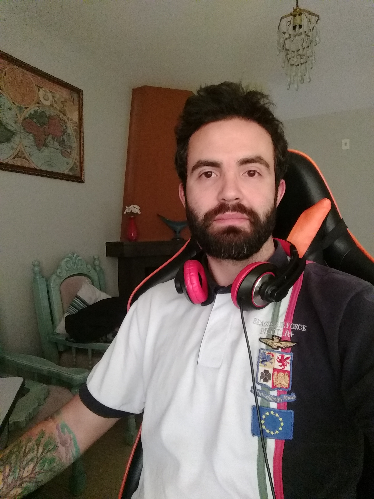

Contato
email
willianlevinski@gmail.com
phone_android
+55 (41) 99959-1121
Habilidades
verified
Adaptabilidade
verified
Dinamismo
verified
HTML / CSS
verified
Node.JS
Idiomas
school
Português
school
Inglês
Resumo
Sou um profissional versátil e dinâmico com
excelentes habilidades interpessoais e
adaptabilidade. Trabalhei diretamente com
atendimento ao cliente ou colaboradores em
praticamente todas as empresas em que fui um
colaborador, começando como atendente/caixa no
meu primeiro emprego e com atendimento ao cliente
em um resort de esqui nos EUA. Finalmente, como
assistente comercial na RBS, companhia afiliada à
Rede Globo.
Eu também trabalhei como suporte técnico no Banco
HSBC, auxiliando colaboradoes em projetos que
visavam a melhoria da estrutura de TI das agências.
Após esse período passei a estagiar em uma agência
de publicidade e proganda exercendo a função de
diretor de arte.
Willian Levinski
Operador Financeiro
Formação Acadêmica
Universidade Positivo
Bacharel, Comunicação, especialização em Publicidade e Propaganda
2011 - 2014
Universidade Federal do Paraná
Bacharel e Licenciatura, Química
2007 - 2011
Experiência
Administrativo / Assistente comercial no Grupo RBS
Curitiba – Paraná – Brasil
Agosto 2013 - Dezembro 2014 (1 ano 4 meses)
• Grupo RBS é afiliado ao Grupo Globo no estado do Rio Grande do Sul. Uma de
minhas funções consistia em auxiliar na interação entre executivos de vendas do
escritório e clientes localizados no Paraná, estes clientes, em geral, eram agências
de publicidade que representavam clientes com interesse em usar os espaços de
mídia do grupo: websites, jornal, rádio, TV e eventos.
• Na função de assistente comercial, era minha responsabilidade checar todas as
peças publicitárias veiculadas no mês vigente para iniciar o processo de emissão e
envio de faturas aos clientes. Entrar em contato com agências para prospectar novos
clientes ou agendar reuniões para os excutivos.
• Na parte administrativa do escritório minha responsabilidade consistia em manter as
questões burocráticas em ordem, como receber e pagar contas, agendar passagens
aéreas para os executivos, enviar e receber malotes. Portanto minhas habilidades de
organização e pragmatismo mostraram-se de grande valor.
Assistente Administrativo na Image Service
Curitiba – Paraná – Brasil
Fevereiro 2012 - Junho 2012 (4 meses)
• Image Service era a empresa que provia serviços terceirizados da HP ao Banco
HSBC. Minha função era prover assistência técnica e administrativa para
funcionários do banco e da terceirizada durante os diferentes estágios do processo,
agendando visitas técnicas nas agências bancárias, oferecendo assistência técnica
remota sobre a instalação das impressoras HP e posteriomente treinando os
colaboradores do banco sobre o uso correto do equipamento.
Diretor de Arte na TX
Curitiba – Paraná – Brasil
Julho 2011 - Dezembro 2011 (5 meses)
• Como estagiário de direção de arte realizei funções relacionadas à posição que
basicamente consistiam em entender as preocupações e demandas que os clientes
possuíam em relação as suas empresas, produtos e com isso desenvolver a melhor
peça ou campanha publicitária que viesse solucionar o problema.
• Atendi clientes como Associação Comercial do Paraná (ACP), Farmácia CallFarma,
Ford Slaviero, entre outros. Algumas das peças publicitárias que criei continuam
sendo utilizadas até hoje
• Nesta função entendi a real importância da comunicação e aperfeiçoei minhas
habilidades sociais dentro de uma organização. Aprendi na prática que o mínimo de
ruído na comunicação entre setores/colaboradores de uma empresa e seus clientes
podem resultar numa perda considerável de tempo de trabalho e enfraquecimento
das relações profissionais.
Atendente no Wisp Resort
McHenry – Maryland – EUA
Dezembro 2009 - Março 2010 (3 meses)
• Trabalhei como responsável pelo atendimento dos clientes do Wisp Resort nos
Estados Unidos durante intercâmbio realizado no período de férias da universidade.
Meu papel consistia em manter a segurança dos usuários, maioria crianças, durante
o percurso da atração. Este intercâmbio me ajudou muito tanto no nível profissional
como pessoal devido ao contato com outras culturas.
• Melhorei minhas habilidades de língua inglesa de forma sem precedentes.